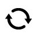

The Aural tab is a collection of long playing music and audio experiences. These tracks are our favorites from the Aquarium 2 sessions, alternate takes or extended remixes. The initial track list included with the application has been hand picked by Morgan Kuhli. You can change the way you listen to these tracks by turning shuffle and loop on and off via the icons on the top bar.
Pressing the shuffle icon when no song is playing starts playing a new random playlist. If you are currently enjoying a song, it will start shuffle / random play after the current song is finished.
Pressing the loop button will loop the current track playing. The default playlist will automatically loop on itself (at the last track it will go back to the first).

We listen to this tab when we relax, exercise, cook and sleep. Please let us know what you use it for!